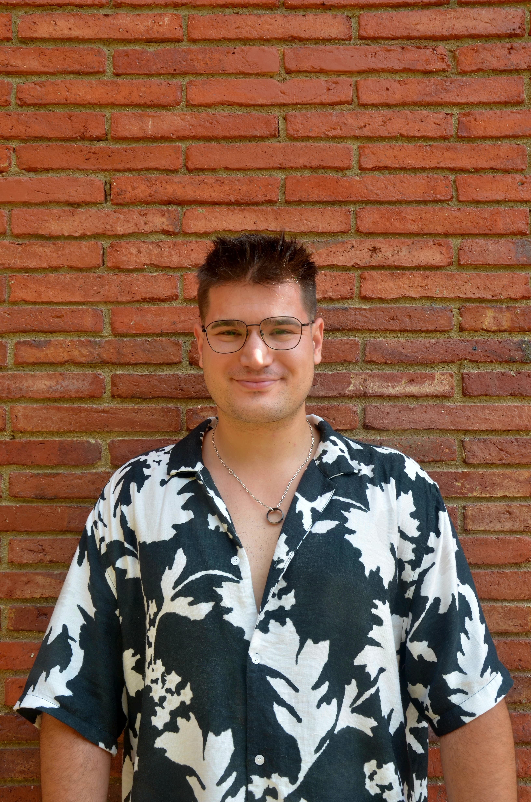

Impulso Negocis Locals amb Pàgines Web Estratègiques
Qui sóc?
Sóc Enginyer Industrial i desenvolupador web especialitzat en ajudar a petites empreses a tenir presència digital. Combino la meva ment analítica amb el disseny estratègic per crear webs que no només són boniques, sinó que funcionen. Mentre finalitzo els meus estudis i em formo en Ciència de Dades, aplico les tecnologies més modernes (Python, HTML, CSS i JS) per resoldre problemes reals de negoci.